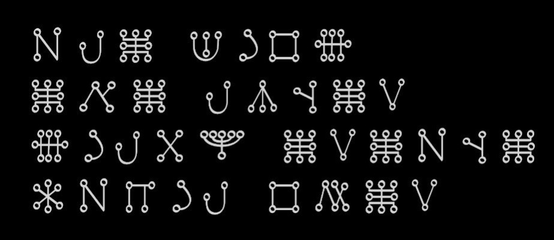

Sie dient der Verständigung durch Resonanz mit feinstofflichen Ebenen.
Eine magische Sprache, die verwendet wird, um mit übernatürlichen Kräften in Kontakt zu treten, kann eine echte alte Sprache sein (z. B. Hebräisch, Griechisch, Ägyptisch), oder für magische Zwecke neu geschaffen werden.
Es gibt mehrere bekannte künstlich geschaffene magische oder ritualsprachliche Systeme, die nicht als natürliche Alltagssprachen entstanden sind:
John Dees Enochisch — Dee behauptet, die Sprache von Engeln empfangen zu haben. Enochisch besitzt ein eigenes Alphabet, Vokabular und teilweise Grammatik.
Die „barbarischen Namen“ der Antike – In den griechisch-ägyptischen Zauberpapyri finden sich lange Reihen geheimnisvoller Wörter und Namen. Viele sind Mischungen aus verschiedenen Sprachen oder reine Klangformeln. Sie werden oft als Vorläufer späterer magischer Kunstsprachen betrachtet.
Die Lichtsprache – Unter Lichtsprache versteht man eine energetische, nonverbale Kommunikationsform aus der spirituellen Praxis. Sie basiert auf heiliger Geometrie und Farbschwingungen, um Botschaften an das Universum zu senden und das eigene Leben bewusst zu gestalten
Die Sprache der Engel von Agrippa – Agrippa von Nettesheim verwendet verschiedene magische Alphabete.
Eine magische Sprache muss nicht grammatikalisch perfekt sein. Klang, Rhythmus und Symbolik sind wichtiger als linguistische Details. Deshalb bestehen viele magische Sprachen eher aus Formeln, Namen und Lautmustern als aus einem vollständigen Alltagsvokabular.
Silben wie ela, vior, ascha oder lunem sind keine Wörter im klassischen Sinn, sondern Schwingungsgebilde.
Beispiel:
➔ Vokabular der Ela-Vior-Sprache.
Ela Vior Formel zur Kontaktaufnahme mit der Wesenheit einer Pflanze.
Ela vior ascha lunar
„Ich rufe dich im Reich der feinstofflichen Ebene der lebenden Kraft“
Tilos aráhna
„Offenbare deine Gestalt, Wesenheit“
Sedil othar
„Ich komme in Respekt und Offenheit.“

Sommer 2026